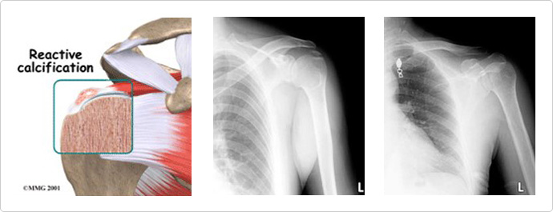

Calcitic tendinitis
Calcitic tendinitis is a disorder characterized by deposits of hydroxyapatite in a tendon of the shoulderand is accompanied by severe pain.
Patients are not able to sleep at night because of the shoulder pain. Several different types of phosphates may be generated at the same time and
the size thereof is different. The cause of the disorder is the hydroxyapatite deposits in the tendon as a result of degenerative damage.

Treatment
- It is desirable to rest and inject anti-inflammatory agents, if you have been diagnosed with this disorder.
- Six-week rehab treatment is necessaryto alleviate your pain.
- Three to five extracorporeal shock wave therapysessions is another option, if conservative treatment has provided no benefit and in the case of
recurrence.
- It is recommended to receive surgery if the shoulder can barely functionbecause of the joint zone being severely restricted.